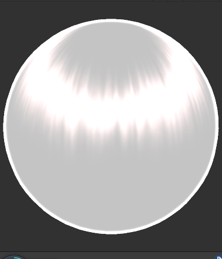

发丝高光不像普通的高光，我们必须对头发高光做单独处理。
发丝阴影
大部分的高光都是点状，但是在发丝高光上，我们需要它呈现一种环状的状态，我们一般称为天使环。
发丝的环状高光其实也是许多根发丝的点状高光组成的，造但为了节省资源和制作难度，我们会用一个面片去替代很多根发丝，最终就造成了这个问题。
为了复现头发高光的样式，我们需要制作各向异性的材质。关于各向异性的定义，网上已经有了很多，在此就不必赘述。
Kajiya-Kay光照模型
先上最后的实现效果：
Kajiya-Kay模型是在制作各向异性头发高光时一个常用的模型。原理很简单，用切线方向来计算该处的高光强度。
1 | float StrandSpecular(float3 T, float3 V, float3 L, float exponent,float scale) |
在顶点着色器中：
1 | //顶点中的切线垂直于发梢到发丝的方向，所以要用乘以法向量 |
一般的高光都是使用法线方向进行制作的，但是此处使用了副切线（T）。原因是我们模拟的对象（发丝）是一个圆柱形，它的形状导致了它的法线的不唯一性，所以法线不能用来计算我们的高光。法线不确定，导致我们的切线也不确定，但是他们的平面是固定的，所以我们可以使用副切线(同时垂直于由法线与切线的向量).

Kajiya-Kay模型本质其实还是还原使用法线计算高光的过程，使用T就是还原在背后的N。关于整个的原理可以看这位大佬的详解，对于切线和副切线的使用、方向衰减系数的讲解是我看过中讲的比较清楚的。
法线扰动
经过上述过程，我们可以得到：
已经初具雏形，但是一般来说头发高光并不是一个圆润的弧形，它会有一些参差的扰动：
于是我们用一张noise图进行扰动，将T的方向向顶点法线方向偏移，可以造成高光向上下错开的感觉。
1 | float3 shiftedT = T + tex_shift * 0.5 * N + shift * N; |
这里我设置了两个变量，一个是从noise图里获得的扰动数据tex_shift，一个是暴露给用户调节的shift。shift是用来供用户调节高光在头发上的大致位置的。
加上nosie图后：

动图：
调整高光强度和位置：
这样就差不多做完啦~